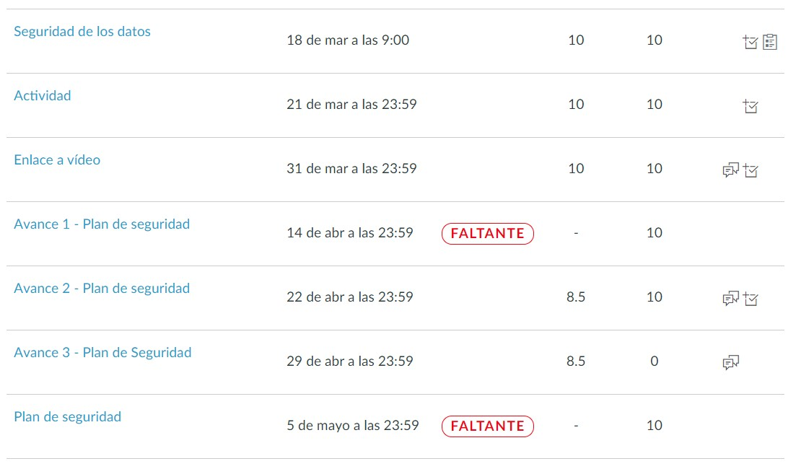
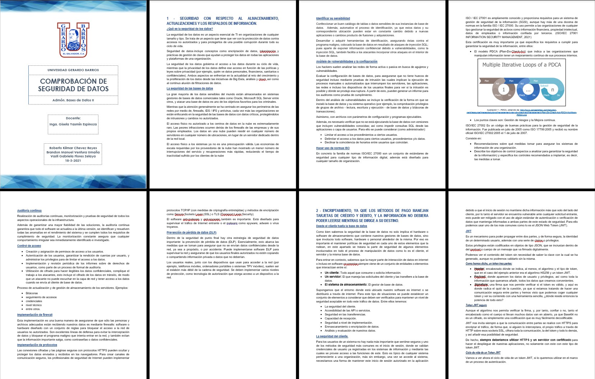
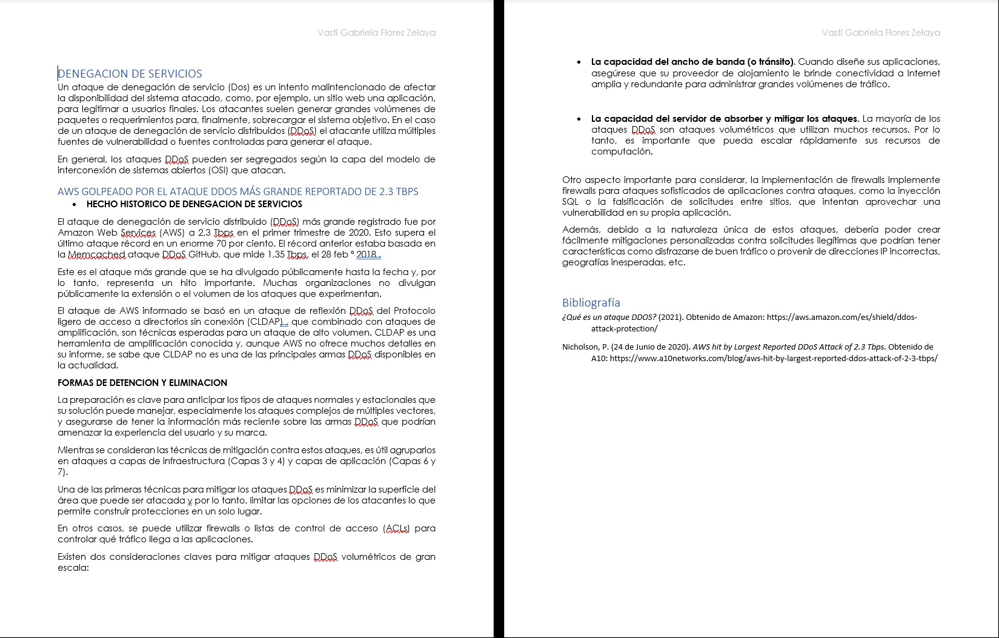
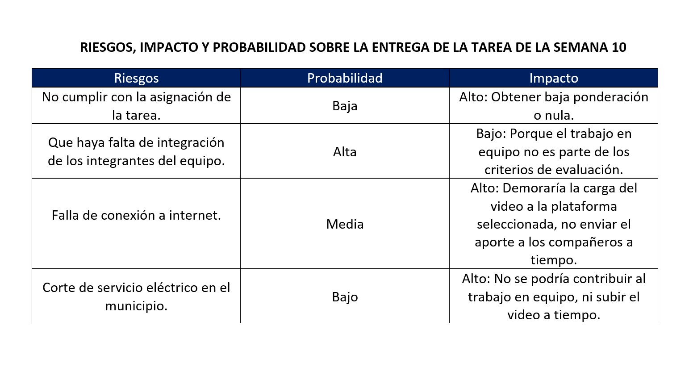
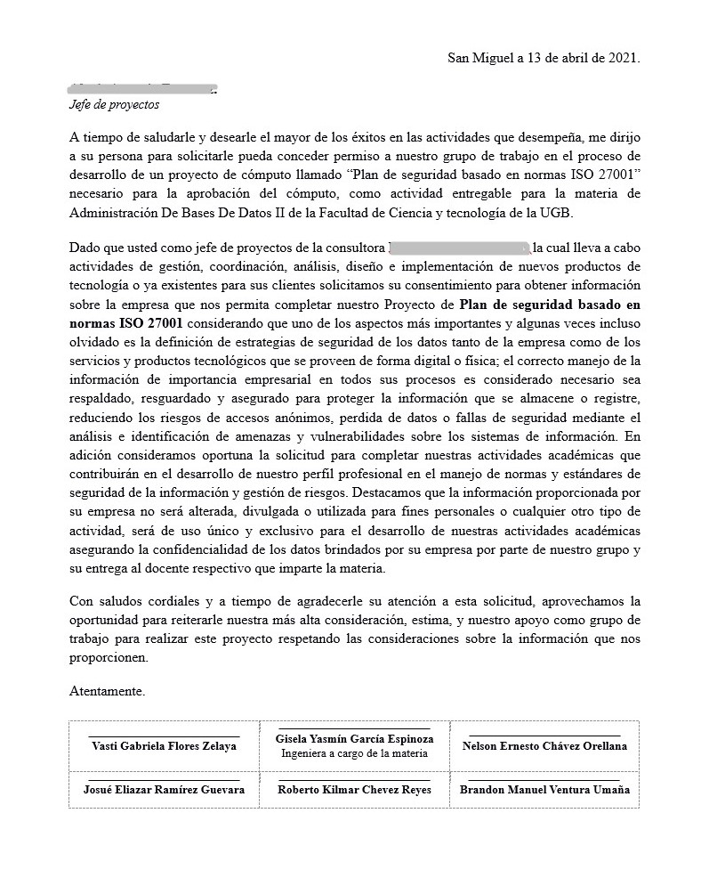
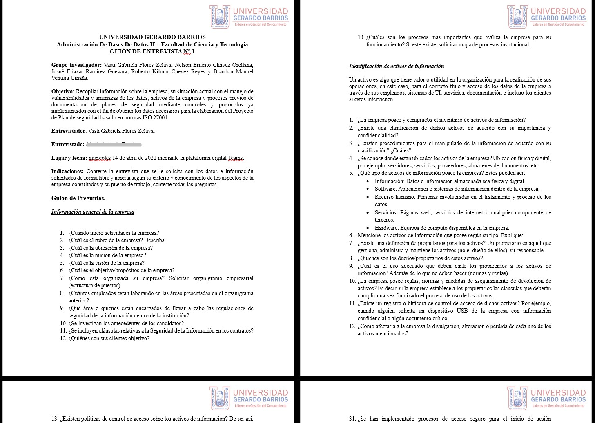
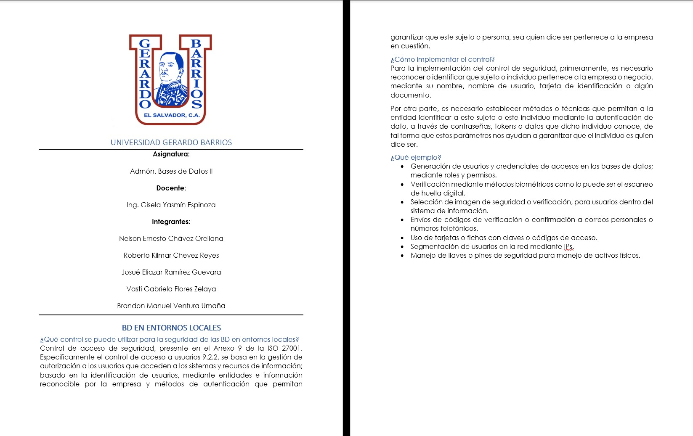
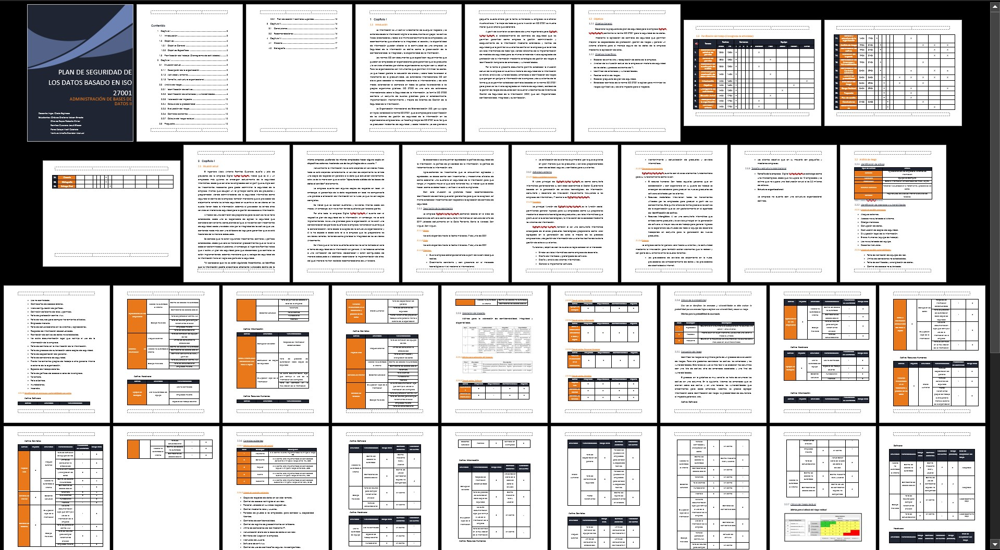

UNIDAD II
SEGURIDAD DE LOS DATOS
Este computo estuvimos aprendiendo sobre todo lo relacionado a la seguridad, seguridad de los datos en entornos locales y entornos web.
Vimos como la seguridad se aplica a diversos activos como edificios, equipos, carga, inventario y en algunos casos personas,
todo esto con la finalidad de protegerlos de amenazas.
Fue muy relavante y crucial para nuestro aprendizaje el haber tenido la experiencia o cercanía a un entorno real, entrevistando y conociendo
el proceso de administración y manejo de amenazas para la seguridad de los datos que tienen en una empresa.
A lo largo del cómputo estuvimos elaborando un plan de seguridad para una empresa real (no se mencionará el nombre por privacidad),
en el cual pudimos conocer los aspectos más relevantes de un plan de seguridad. Analizando las diferentes amenazas e identificando los
riesgos a los que estan expuestos, así mismo identificando los controles aplicados y los inexistentes. Finalmente se realizó una
propuesta con controles tomados de la norma 27000, que de ser implementados permitirían una mejor administración de la seguridad a
nivel general tratando los riesgos más graves. (No se adjuntará el plan elaborado, respetando la privacidad de la empresa).
Algo muy importante que aprendimos es que los riesgos no pueden ser eliminados en su totalidad, pero es muy necesario el implementar
controles, buenas prácticas que permitan reducir a un nivel aceptable todos esos riesgos identificados.
Estuvo muy bonito aprender sobre este tema, personalmete me llamó la atención el conocer el trasfondo y procedimiento que conlleva el realizar
un plan de seguridad; sin embargo no mentiré que en principio al haber tanta teoría me aburría, pero eso se superó y considero que al final
en todo el proceso, el involucramiento, las prácticas en clase, la retroalimentación de nuestra docente, aprendí mucho sobre este tema que sin
duda es muy importante o mejor dicho indispensable para cualquier empresa que tiene cualquier tipo de activo de los que se mencionaron al inicio.
EVIDENCIA DE ENTREGAS

Tareas faltantes fueron colaborativas,
por ende entregadas por compañeros de equipo.
TAREAS Y PRACTICAS






PLAN DE SEGURIDAD BASADO EN NORMA 27000

**Por privacidad a la empresa no se muestra
plan de seguridad a detalle.
GUIAS RESUELTAS
LISTA DE VERIFICACION DE SEGURIDAD
Analisis de Amenazas, riesgos y vulnerabilidades de las BD
Analisis de Riesgos para la Tarea Semana10
POR PRIVACIDAD DE LA EMPRESA NO SE PRESENTARá PUBLICAMENTE LOS AVANCES NI EL PLAN DE SEGURIDAD TERMINADO.